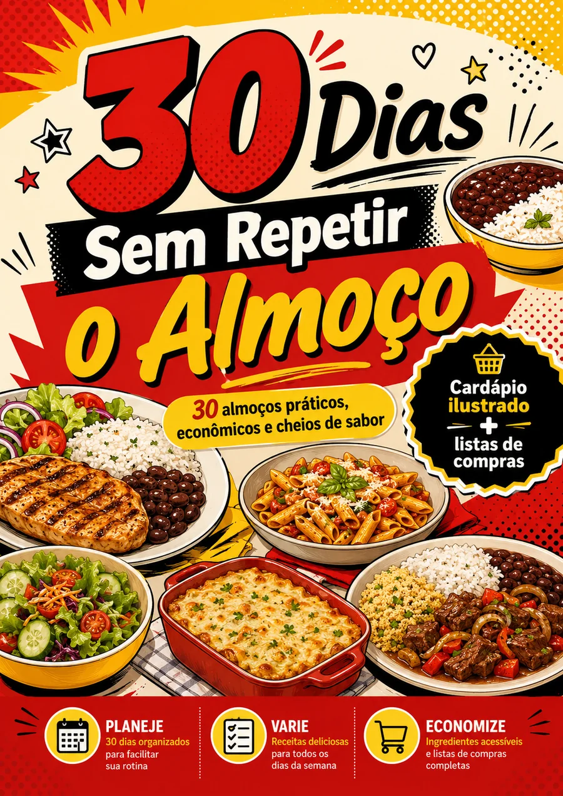
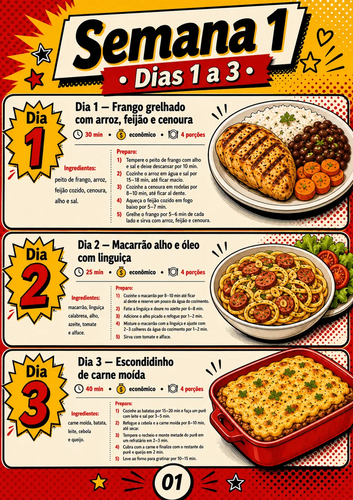
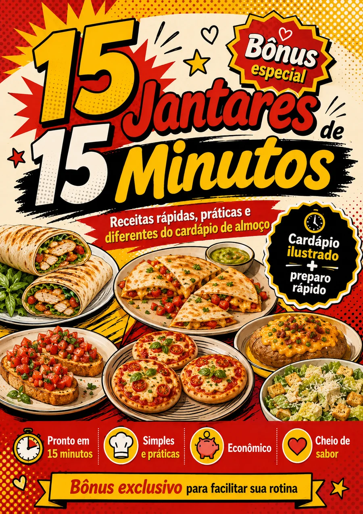
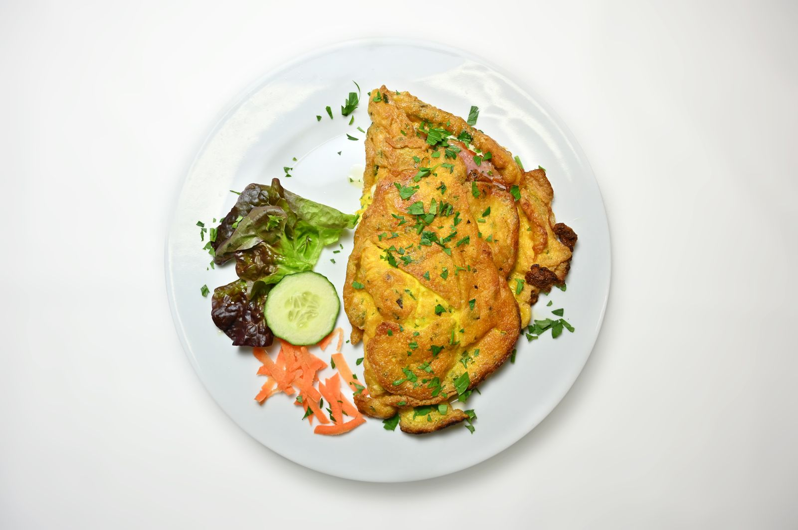
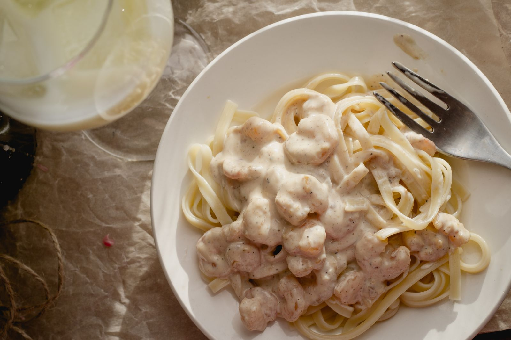

Mesmos pratos
A rotina cai sempre no arroz, feijão e na mesma mistura.
ALMOÇO SURPRESA
Escolha uma caixinha e libere grátis uma receita completa para fazer hoje.
🎁 ESCOLHA 1 GRÁTIS
A primeira escolha libera uma receita completa. Depois, os outros 29 dias continuam bloqueados.
Escolha pelo instinto e libere a receita-amostra completa.
SUA CAIXINHA REVELOU
Sem cadastro e sem pegadinha: você recebe ingredientes e preparo completos.
A VERDADE É ESSA
Quando a fome chega, você abre a geladeira, pensa nas mesmas opções e acaba repetindo o prato de sempre.
A rotina cai sempre no arroz, feijão e na mesma mistura.
Ingredientes soltos acabam esquecidos e perdem a graça.
Você procura ideia justamente quando já está com fome.
ZERO COMPLICAÇÃO
Um sistema simples para tirar uma decisão da sua cabeça todos os dias.
Escolha a refeição do calendário e saiba exatamente o que preparar.
Foto, ingredientes, tempo, porções e preparo no mesmo lugar.
Siga por 30 dias com variedade e uma compra mais organizada.


POR DENTRO DO DESAFIO
Você recebe uma experiência digital completa para consultar pelo celular, tablet ou computador.
BÔNUS ESPECIAL INCLUSO
Você também recebe 15 Jantares de 15 Minutos: ideias rápidas, práticas e diferentes do cardápio de almoço.



UMA DECISÃO A MENOS POR DIA
DESBLOQUEIE TUDO AGORA
Leve o desafio completo e pare de começar o almoço pela dúvida.
Você será direcionado ao ambiente seguro de pagamento da Cakto.
Experimente o material. Se estiver dentro das condições da garantia e não fizer sentido para você, solicite o reembolso pelo suporte.
DÚVIDAS FREQUENTES
Aqui estão as respostas mais importantes sobre o desafio.
Você recebe o guia digital 30 Dias Sem Repetir o Almoço, com 30 refeições, organização semanal e listas de compras, além do bônus 15 Jantares de 15 Minutos.
É uma experiência digital organizada como desafio. A landing torna a descoberta interativa, e o conteúdo completo é entregue em formato digital para consulta no celular, tablet ou computador.
Sim. O cardápio foi pensado com ingredientes conhecidos, substituições possíveis e opções econômicas para a rotina.
As orientações do guia trazem referências para 2 pessoas e adaptação para 4 pessoas.
Sim. Os 15 Jantares de 15 Minutos fazem parte desta oferta, sem cobrança separada.
Após a confirmação do pagamento, você recebe as instruções de acesso digital pelos dados informados no checkout.
O prazo e as condições aparecem no bloco da oferta e no checkout. A solicitação deve ser feita dentro desse período pelo canal de suporte informado.
O ALMOÇO DE AMANHÃ JÁ PODE ESTAR DECIDIDO
Abra o calendário completo e comece o desafio.